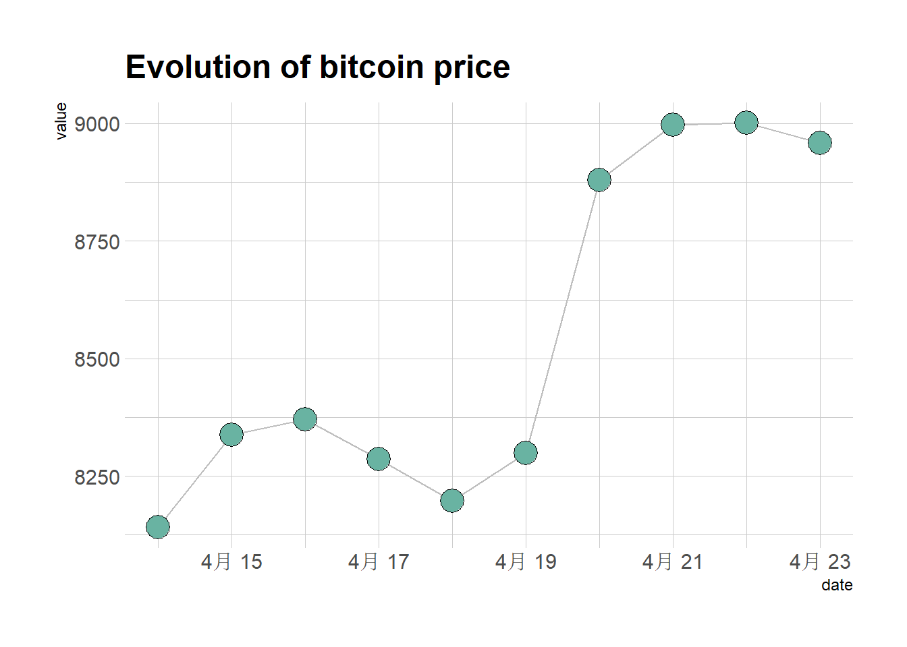
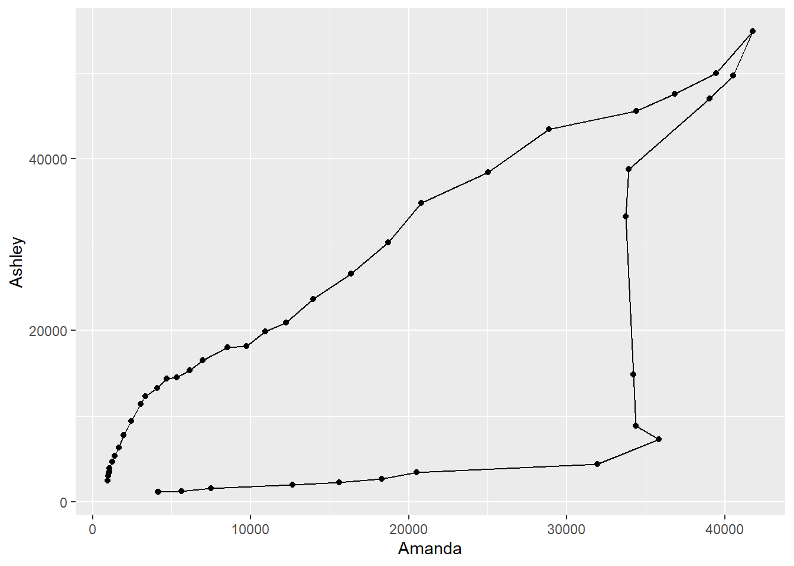
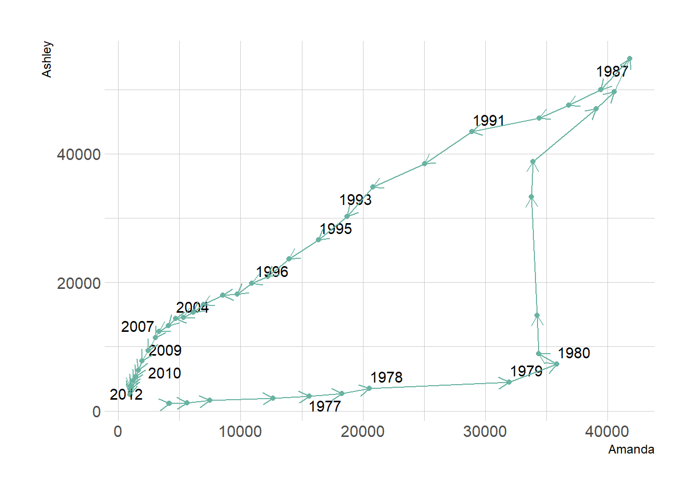
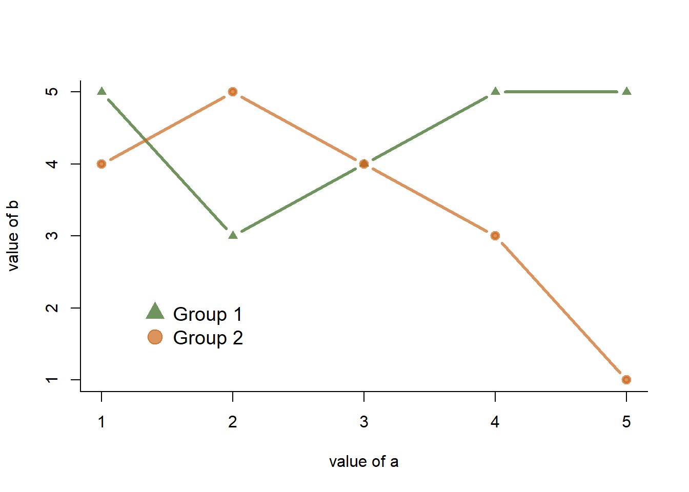

Show/Hide Code
library(tidyverse)
library(hrbrthemes) # 主题
library(babynames) # 数据集
library(ggrepel) # 标签
library(dygraphs) # 用于绘制交互式时间序列图
library(xts) # 用于数据框与 xts 格式转换
library(tidyverse) # 数据处理
library(lubridate) # 处理日期时间library(tidyverse)
library(hrbrthemes) # 主题
library(babynames) # 数据集
library(ggrepel) # 标签
library(dygraphs) # 用于绘制交互式时间序列图
library(xts) # 用于数据框与 xts 格式转换
library(tidyverse) # 数据处理
library(lubridate) # 处理日期时间geom_point() 和 geom_line() 组合在一起。
# 读取数据，并将日期列转换为 Date 类型
data <- read.table("https://raw.githubusercontent.com/holtzy/data_to_viz/master/Example_dataset/3_TwoNumOrdered.csv", header=T)
data$date <- as.Date(data$date)
# 取数据的最后10行，绘制连接散点图
data |>
tail(10) |>
ggplot(aes(x = date, y = value)) +
geom_line() + # 添加连线
geom_point() # 添加散点使用 hrbrthemes::theme_ipsum() 函数自定义主题。
# 取数据的最后10行，绘制连接散点图，并自定义主题
data |>
tail(10) |>
ggplot(aes(x = date, y = value)) +
geom_line(color = "grey") + # 添加灰色连线
geom_point(shape = 21, color = "black", fill = "#69b3a2", size = 6) + # 添加带填充色的点
theme_ipsum() + # 应用 hrbrthemes 的主题
ggtitle("Evolution of bitcoin price") # 添加标题
连接散点图也可以是一种强大的技术，用来讲述两个变量演变的故事。
下面的示例展示了美国名为 Amanda 和 Ashley 的婴儿数量演变。
# 筛选1970年后的女性婴儿，名字为 Ashley 或 Amanda 的数据
data <- babynames |>
filter(name %in% c("Ashley", "Amanda")) |> # 只保留 Ashley 和 Amanda
filter(sex == "F") |> # 只保留女性
filter(year > 1970) |> # 只保留1970年后的数据
select(year, name, n) |> # 选择年份、名字和数量
spread(key = name, value = n, -1) # 宽数据格式，每列为一个名字
# 绘图：x轴为 Amanda，y轴为 Ashley，标签为年份
data |>
ggplot(aes(x = Amanda, y = Ashley, label = year)) +
geom_point() + # 绘制散点
geom_segment(aes(
xend = c(tail(Amanda, n = -1), NA), # 连接相邻年份的点
yend = c(tail(Ashley, n = -1), NA)
))
再改进一下，在图表中添加箭头和标签来引导读者：
# 随机选择部分年份用于标签
tmp_date <- data %>% sample_frac(0.3)
# 绘图
data %>%
ggplot(aes(x = Amanda, y = Ashley, label = year)) +
geom_point(color = "#69b3a2") + # 绘制散点
geom_text_repel(data = tmp_date) + # 添加年份标签，避免重叠
geom_segment(
color = "#69b3a2",
aes(
xend = c(tail(Amanda, n = -1), NA), # 连接相邻年份的点
yend = c(tail(Ashley, n = -1), NA)
),
arrow = arrow(length = unit(0.3, "cm")) # 添加箭头
) +
theme_ipsum() # 应用主题
交互式时间序列图：巴黎 Vélib 自行车租赁数据（前300条）：
# 加载所需包
# library(dygraphs) # 用于绘制交互式时间序列图
# library(xts) # 用于数据框与 xts 格式转换
# library(tidyverse) # 数据处理
# library(lubridate) # 处理日期时间
# 读取数据
path = 'https://raw.githubusercontent.com/holtzy/R-graph-gallery/master/DATA/bike.csv'
data <- read.table(path, header = TRUE, sep = ",") %>% head(300) # 取前300行数据
# 将时间列从因子/字符转换为日期时间格式
data$datetime <- ymd_hms(data$datetime)
# 创建 xts 对象，dygraph 需要此格式
# x = 观测值，order.by = 时间索引
don <- xts(x = data$count, order.by = data$datetime)
# 绘制交互式时间序列图
dygraph(don) |>
dyOptions(
labelsUTC = TRUE, # 使用 UTC 时间标签
fillGraph = TRUE, # 填充曲线下方区域
fillAlpha = 0.1, # 填充透明度
drawGrid = FALSE, # 不显示网格线
colors = "#D8AE5A" # 曲线颜色
) |>
dyRangeSelector() |>
dyCrosshair(direction = "vertical") |>
dyHighlight(
highlightCircleSize = 5, # 鼠标悬停时点的大小
highlightSeriesBackgroundAlpha = 0.2, # 高亮系列的背景透明度
hideOnMouseOut = FALSE # 鼠标移出时是否隐藏高亮
) |>
dyRoller(rollPeriod = 1) # 滚动平均窗口大小交互式时间序列图：巴黎 Vélib 自行车租赁数据（前300条）
# 构造示例数据
a = c(1:5) # x 轴数据，1 到 5
b = c(5, 3, 4, 5, 5) # 第一组 y 轴数据
c = c(4, 5, 4, 3, 1) # 第二组 y 轴数据
# 绘制第一组数据的连接散点图
plot(
b ~ a, # y ~ x 公式
type = "b", # 点和线都显示
bty = "l", # 只显示左和下边框
xlab = "value of a", # x 轴标签
ylab = "value of b", # y 轴标签
col = rgb(0.2, 0.4, 0.1, 0.7), # 线和点的颜色（半透明绿色）
lwd = 3, # 线宽
pch = 17, # 点的形状（三角形）
ylim = c(1, 5) # y 轴范围
)
# 添加第二组数据的连接散点图
lines(
c ~ a, # y ~ x 公式
col = rgb(0.8, 0.4, 0.1, 0.7), # 线和点的颜色（半透明橙色）
lwd = 3, # 线宽
pch = 19, # 点的形状（实心圆）
type = "b" # 点和线都显示
)
# 添加图例
legend(
"bottomleft", # 图例位置
legend = c("Group 1", "Group 2"), # 图例标签
col = c(
rgb(0.2, 0.4, 0.1, 0.7),
rgb(0.8, 0.4, 0.1, 0.7)
), # 图例颜色
pch = c(17, 19), # 图例点形状
bty = "n", # 不显示图例边框
pt.cex = 2, # 点的大小
cex = 1.2, # 字体大小
text.col = "black", # 文字颜色
horiz = FALSE, # 垂直排列
inset = c(0.1, 0.1) # 图例内边距
)
# 加载图片读取包
library(jpeg)
library(png)
# 读取PNG图片作为背景
my_image <- readPNG("./image/R_full_medium.png")
# 设置空白绘图区，不画任何点
plot(1:2, type='n', main="", xlab="x", ylab="y")
# 获取绘图区参数，并将图片填充到指定区域
lim <- par()
rasterImage(my_image,
xleft=1, xright=2,
ybottom=1.3, ytop=1.7)
# 添加网格线
grid()
# 在图片上添加连接散点图
lines(
x=c(1, 1.2, 1.4, 1.6, 1.8, 2.0),
y=c(1, 1.3, 1.7, 1.6, 1.7, 1.0),
type="b", lwd=5, col="black"
)lubridate()使用日期前，务必使用 lubridate() 把 “日期” 转化为 日期/时间格式。
# 设置随机种子，保证结果可复现
set.seed(124)
# 构造日期字符串，格式为 "2015/03/XX"，XX为1到31中的随机6个数字
date <- paste("2015/03/", sample(seq(1, 31), 6), sep = "")
# 随机生成6个1到100之间的整数，作为数值
value <- sample(seq(1, 100), 6)
# 将日期和数值合并为数据框
data <- data.frame(date, value)
# 将日期列转换为 Date 类型，便于后续处理和绘图
data$date <- as.Date(data$date)
# 按照日期升序排列数据
data <- data[order(data$date), ]
# 绘制连接散点图
plot(
data$value ~ data$date, # y轴为value，x轴为date
type = "b", # 同时绘制点和线
lwd = 3, # 线宽为3
col = rgb(0.1, 0.7, 0.1, 0.8), # 线和点的颜色（半透明绿色）
ylab = "value of ...", # y轴标签
xlab = "date", # x轴标签
bty = "l", # 只显示左和下边框
pch = 20, # 点的形状（实心圆）
cex = 4 # 点的大小
)
# 添加水平辅助线，y轴从0到100，每隔10画一条灰色线
abline(h = seq(0, 100, 10), col = "grey", lwd = 0.8)Base R 提供了许多选项来自定义图表外观。基本上所有功能都可以通过这几个选项实现：
lwd → 线条宽度type → 点之间的连接lty → 线条类型cex → 形状大小col → 控制颜色pch → 标记形状# 设置绘图区边距
par(mar = c(3, 3, 3, 3))
num <- 0 # 用于lty编号
num1 <- 0 # 用于type和lwd编号
# 创建空白绘图区，不显示任何点
plot(
0, 0,
xlim = c(0, 21), # x轴范围
ylim = c(0.5, 6.5), # y轴范围
col = "white", # 不显示点
yaxt = "n", # 不显示y轴刻度
ylab = "", # y轴标签为空
xlab = "" # x轴标签为空
)
# 填充图形各行，分别演示不同参数
for (i in seq(1, 20)) {
# 第一行：pch（点的形状）
points(i, 1, pch = i, cex = 3)
# 第二行：col（颜色）
points(i, 2, col = i, pch = 16, cex = 3)
# 第三行：cex（点的大小）
points(i, 3, col = "black", pch = 16, cex = i * 0.25)
# 第四行：lty（线型），每隔3个画一条线
if (i %in% c(seq(1, 18, 3))) {
num = num + 1
points(c(i, i + 2), c(4, 4), col = "black", lty = num, type = "l", lwd = 2)
text(i + 1.1, 4.15, num) # 标注lty编号
}
# 第五、六行：type（线型类型）和lwd（线宽），每隔5个画一组
if (i %in% c(seq(1, 20, 5))) {
num1 = num1 + 1
# type参数演示（点、线、点线、点线重叠）
points(
c(i, i + 1, i + 2, i + 3),
c(5, 5, 5, 5),
col = "black",
type = c("p", "l", "b", "o")[num1],
lwd = 2
)
text(i + 1.1, 5.2, c("p", "l", "b", "o")[num1]) # 标注type类型
# lwd参数演示（线宽1~4）
points(
c(i, i + 1, i + 2, i + 3),
c(6, 6, 6, 6),
col = "black",
type = "l",
lwd = num1
)
text(i + 1.1, 6.2, num1) # 标注lwd数值
}
}
# 添加y轴标签，分别对应各参数
axis(
2,
at = c(1, 2, 3, 4, 5, 6),
labels = c("pch", "col", "cex", "lty", "type", "lwd"),
tick = TRUE,
col = "black",
las = 1,
cex.axis = 0.8
)
# 添加x轴标签，1~20
axis(
1,
at = seq(1, 20),
labels = seq(1, 20),
tick = TRUE,
col = "black",
las = 1,
cex.axis = 0.8
)
带有文字标签的散点图，见 Section 7.7。